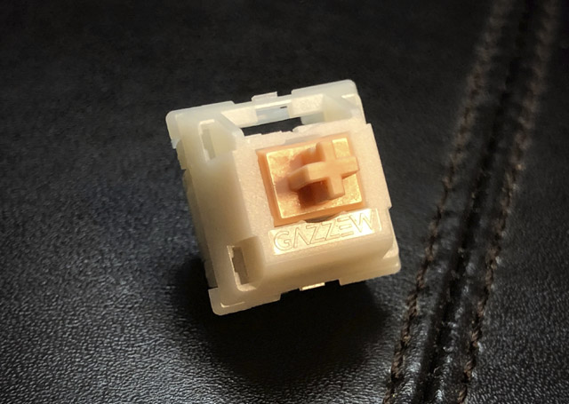

Holy Boba

Description
The Black Cherry Pies are one of the most popular tactile frankenswitches.
It is a deeper thanks to the boba housing and extremely tactile when paired with a halo stem!
Ingredients
- Any Gazzew tactile boba top and bottom housing (U4t or U4)
- Any halo stem (Holy Panda, Halo True, Kailh Polia)
- Any stock or aftermarket spring of your choice (SPRiT MX Slow Extreme II 63.5g Springs is personally recommended)
Steps
- Harvest boba top and bottom housings from a tactile Gazzew boba switch (U4t or U4).
- Make sure you keep the Gazzew springs if you don't plan on buying any aftermarket springs!
- Harvest halo stems from Holy Panda, Halo True, or Kailh Polia switches.
There are other alternative stems that can be used for the Holy bobas.
- Begin assembling the switch, take a boba bottom housing and lube it.
- A thicker lube like Krytox 205g0 may provide a deeper sound but hinder the tactility.
- Others recommend using a lighter lube like Tribosys 3203.
- Take your spring and lube it. Place it on the pole of the boba bottom housing.
- Take your halo stem and lube it. Place it on the spring where the legs of the stem face towards the leaf of the bottom housing.
- Finish assembling the switch by snapping on the Cherry top housing on your Black Cherry Pie switch.
BUT, before you snap it on. make sure you press to bottom out the stem below the leaf so as to not damage the Holy Boba's tactility.
Congrats! You have created your Holy Boba switches!